Selected Pulications
Publications (* equal contribution, * corresponding author. All publications on [Google Scholar])
| 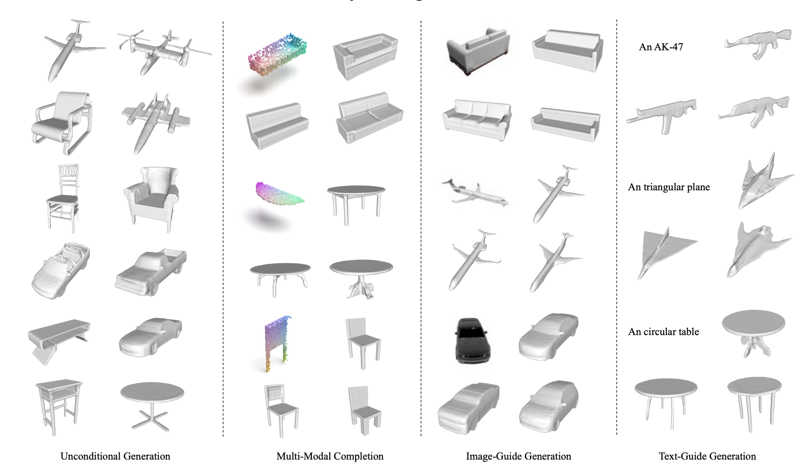 |
S. Luo, X. Qian, Y. Fu, Y. Zhang, Y. Tai, Z. Zhang, C. Wang, and X. Xue. International Conference on Computer Vision (ICCV), 2023 arXiv |
| 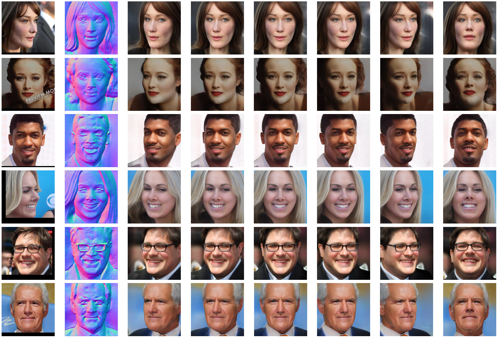 |
Z. Zhang, R. Chen, W. Cao, Y. Tai*, and C. Wang* Computer Vision and Pattern Recognition (CVPR), 2023 Paper / Video State-of-the-art 3D portrait modeling, robust to large pose, challenging light or makeup. Also state-of-the-art novel view synthetis performance. |
| 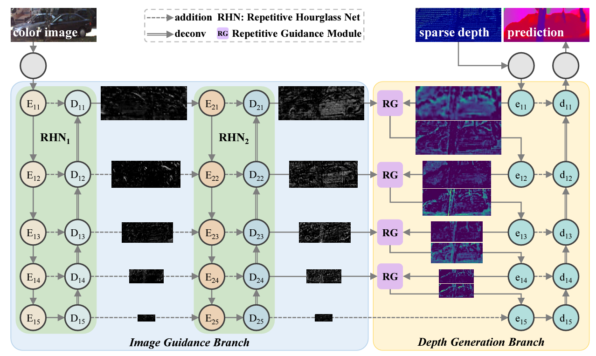 |
Zhiqiang Yan, Kun Wang, Xiang Li, Zhenyu Zhang, Jun Li and Jian Yang European Conference on Computer Vision (ECCV), 2022 Paper |
| 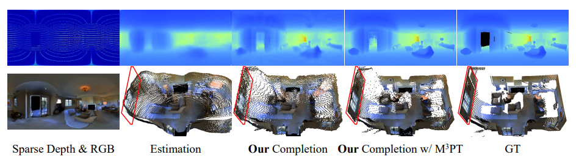 |
Zhiqiang Yan, Xiang Li, Kun Wang, Zhenyu Zhang, Jun Li and Jian Yang European Conference on Computer Vision (ECCV), 2022 Paper |
| 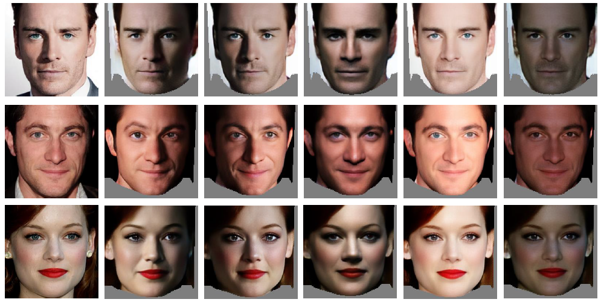 |
Zhenyu Zhang, Yanhao Ge, Ying Tai, Weijian Cao, Renwang Chen, Kunlin Liu, Hao Tang, Xiaoming Huang, Chengjie Wang, Dongjin Huang, Zhifeng Xie. CVPR 2022 Paper / 3D face modeling is limited by classical graphics rendering, so that we let it benefit from a novel neural rendering approach. |
| 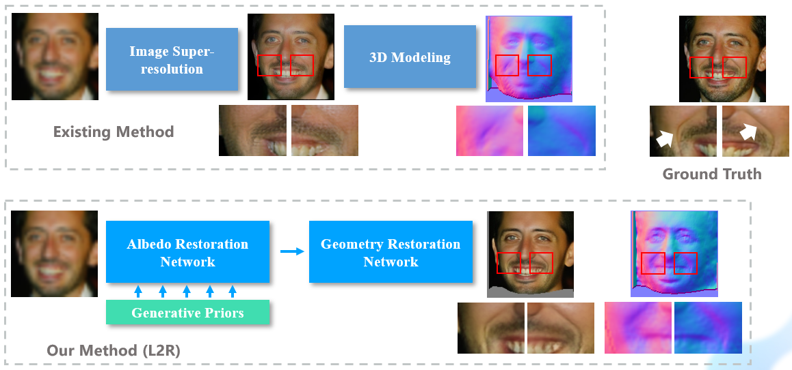 |
Zhenyu Zhang, Yanhao Ge, Ying Tai, Xiaoming Huang, Chengjie Wang, Hao Tang, Dongjin Huang, Zhifeng Xie. CVPR 2022 Paper / When restoring degraded faces, you need to restore the 3D geometry-aware effect. |
| 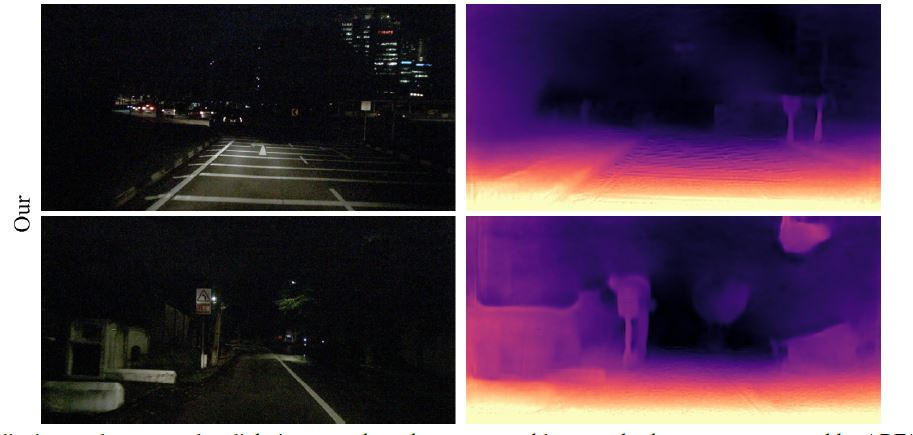 |
Kun Wang*, Zhenyu Zhang*, Xiang Li, Jun Li, Baobei Xu, Jian Yang. ICCV 2021 Paper / Code Nighttime is challenging, but we make it. Dataset and code are now released. |

|
Zhenyu Zhang, Yanhao Ge, Renwang Chen, Ying Tai, Yan Yan, Jian Yang, Chengjie Wang, Jinlin Li and Feiyue Huang. CVPR 2021, (Oral Presentation) Paper / Arxiv / Code Improving the non-parametric 3D face reconstruction by leveraging consistency of unconstrained photo collection. |
| 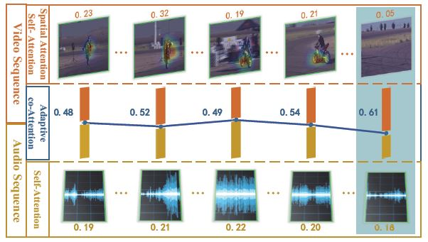 |
Hanyu Xuan, Zhenyu Zhang, Shuo Chen, Jian Yang, Yan Yan. AAAI 2020 Audio-visual event localization on temporal inconsistent videos |
| 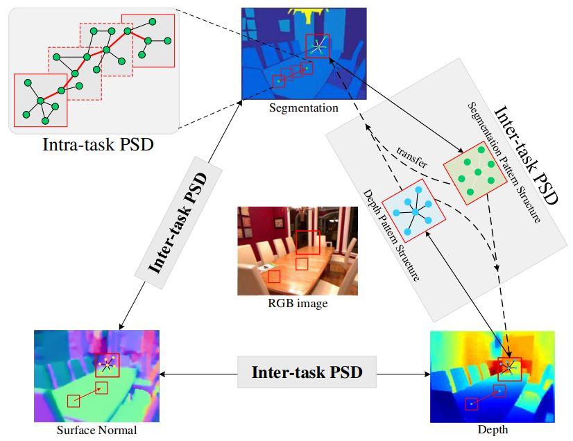 |
Ling Zhou, Zhen Cui, Chunyan Xu, Zhenyu Zhang, Chaoqun Wang, Tong Zhang, Jian Yang. CVPR 2020 A graph-based method to mine multi-task relationship. |
| 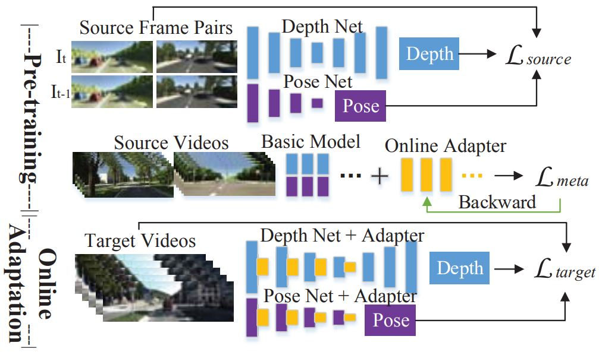 |
Zhenyu Zhang, Stephane Lathuiliere, Elisa Ricci, Nicu Sebe, Yan Yan, Jian Yang. CVPR 2020 Depth estimation method fails in new scenes, but we can continuously align it against domain shift. |
| 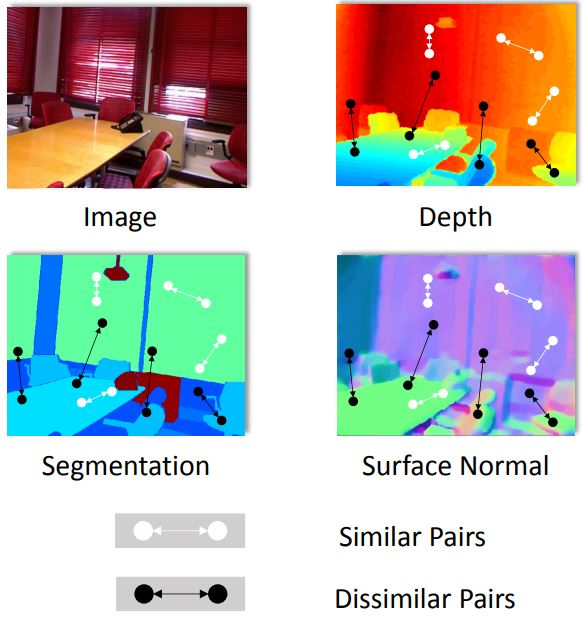 |
Zhenyu Zhang, Zhen Cui, Chunyan Xu, Yan Yan, Nicu Sebe, Jian Yang. CVPR 2019 Feel difficult to combine different tasks? Here we provide a pair-wise similarity based method to leverage multi-task correlation. |
| 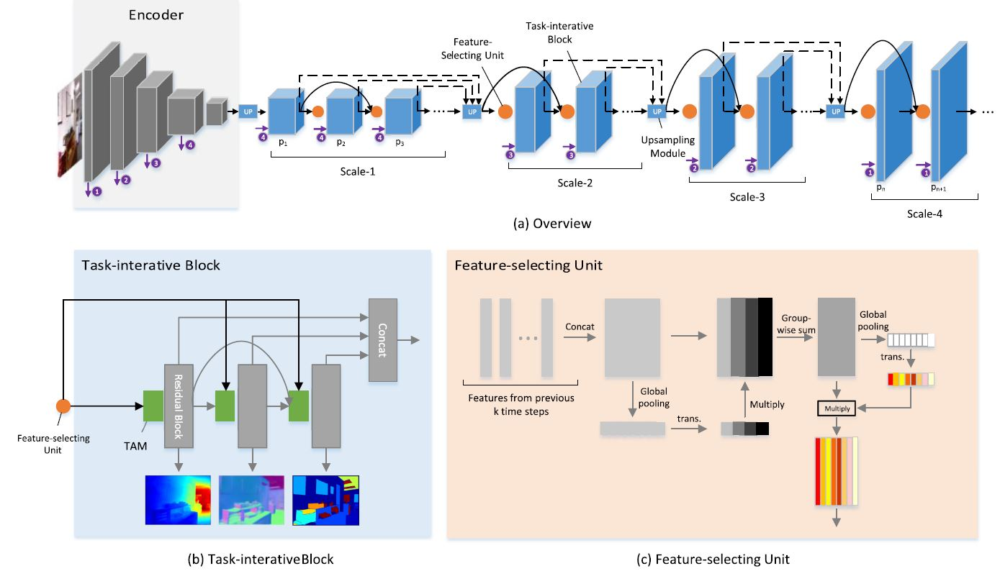 |
Zhenyu Zhang, Zhen Cui, Chunyan Xu, Zequn Jie, Xiang Li, Jian Yang. TPAMI 2019 A recursive approach for joint-task learning in RGBD scenes. |
| 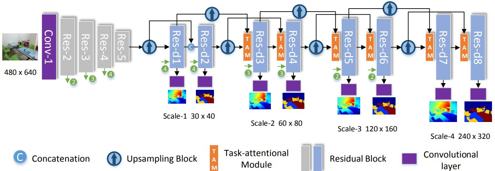 |
Zhenyu Zhang, Zhen Cui, Chunyan Xu, Zequn Jie, Xiang Li, Jian Yang. ECCV 2018 A new framework for joint depth estimation & semantic segmentation. |
| 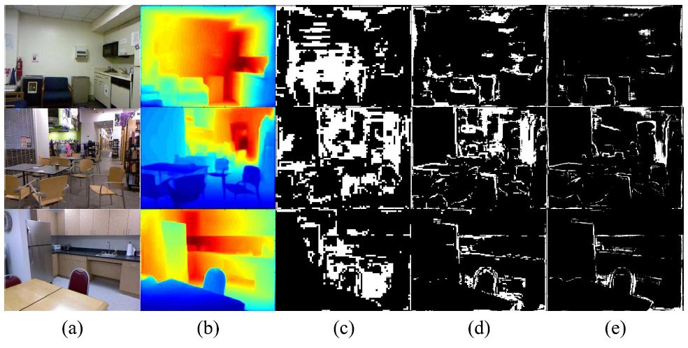 |
Zhenyu Zhang, Chunyan Xu, Jian Yang, Junbin Gao, Zhen Cui. TIP 2018 Improving monocular depth estimation by mining difficult regions. |
| 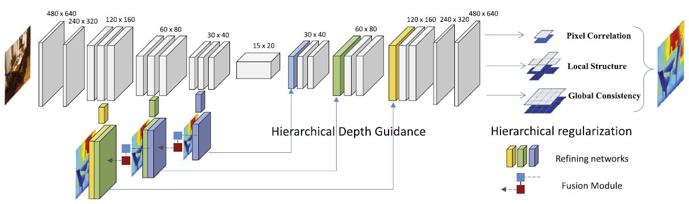 |
Zhenyu Zhang, Chunyan Xu, Jian Yang, Ying Tai, Liang Chen. Pattern Recognition 2018 A new framework for monocular depth estimation. |